Atelier Présentation Python

Qui suis-je ?
- FELD Boris
- Développeur PYTHON
- http://feldboris.alwaysdata.net/
- https://twitter.com/lothiraldan
Python Késako ?
Python is a programming language that lets you work more quickly and integrate your systems more effectively. You can learn to use Python and see almost immediate gains in productivity and lower maintenance costs.
En français ?
Python est un langage qui va te permettre de programmer plus rapidement et plus efficacement.
Informations globales
- Python a été crée par Guido Van Rossum (considéré depuis comme dictateur bienveillant à vie).
- Le projet Python a été nommé ainsi car Guido Van Rossum est un fan des Monthy Python (comme tous les développeurs python d'ailleurs ^^).
- La première version a été écrite en 1989, durant 1 semaine de vacances de Guido Van Rossum durant le période des fêtes.
Informations bis
- Considéré aujourd'hui comme 6ème langage le plus populaire (par Tiobe Index) et a gagné le prix du Langage de l'année 2010 et celui de 2007 aussi.
Guido Van Rossum

Caractéristiques de Python
Forces de python
- Portable.
- Gratuit.
- Syntaxe simple -> Facile à apprendre.
- Garbage collector included.
- Extensible.
- Batteries included.
Syntaxe python
La syntaxe python est très simple, très concise et impose d'utiliser l'indentation des lignes de code ce qui rend les programmes plus faciles à lire.
Exemple
1 if True:
2 print("Condition is true")
3
4 print("Outside condition")
Typage des données Python
Python est un langage à typage fort dynamique.
Typage Fort
Un langage est fortement typé si :
1) La compilation ou l'exécution peuvent détecter des erreurs de typage. Si ces erreurs ne sont jamais reconnues, le langage est faiblement typé (c'est, par exemple, le cas de PHP).
2) Les conversions implicites de types sont formellement interdites. Si de telles conversions sont possibles, le langage est faiblement typé. Exemples répondant à ce critère : OCaml, Haskell.
Typage dynamique
Un langage est typé dynamiquement si la déclaration des variables se fait sans spécifier le type.
Python : un langage Objet
Python est avant tout un langage objet, même si il permet d'utiliser d'autres paradigmes que la programmation orientée objet, au final on ne manipule que des objets en Python (C'est très important et on le reverra plus tard.).
Création d'un nouveau projet
Projet Free-Style
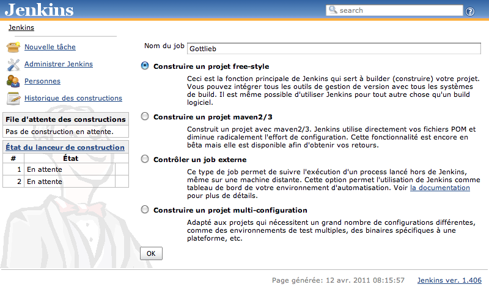
Informations basiques
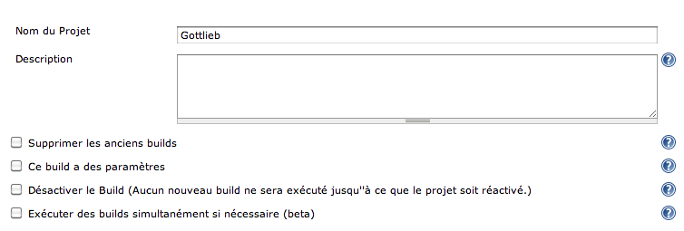
Configuration du (D)VCS
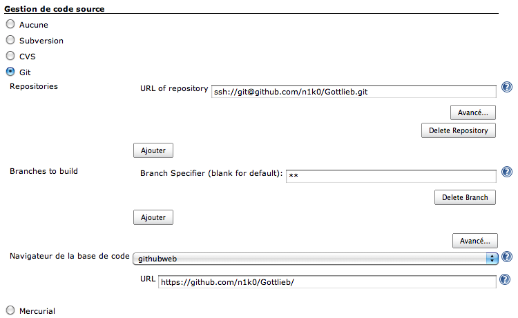
Astuce: en SSH vous pouvez placer vos clés dans le homedir de jenkins
Build triggers
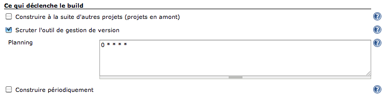
- Syntaxe CRON
Étapes de build
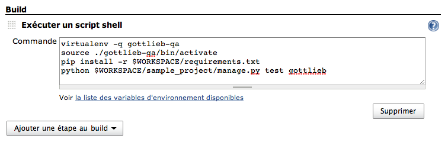
WTF?
- On crée un
virtualenvs'il n'existe pas - On l'active
- On installe ou met à jour les dépendances avec pip
- On lance la suite de tests
Notifications
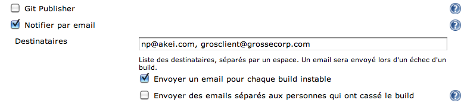
(pour l'envoi des notifications d'échec par email au client, ne faites pas ça chez vous, hein)
Houston, on a un problème
Mais… Mais… Jenkins, une fois qu'il a fini de lancer les tests, il fait quoi ?
Django-Jenkins
Django-Jenkins
- Application Django
- Open Source (LGPL)
- Effectue des opérations à destination de Jenkins :
- Joue les tests
- Lance des outils d'analyse de code (
Coverage,Pylint,PyFlaxes, etc…) - Décore les résultats obtenus de façon exploitables pour Jenkins (
xUnit)
- https://github.com/kmmbvnr/django-jenkins
Ça s'installe comment ?
Avec pip :
$ pip install django-jenkins
Puis ajoutez l'app django_jenkins dans vos INSTALLED_APPS.
C'est tout.
Pour l'utiliser, lancez la commande ./manage.py jenkins, l'export des résulats se fera dans le répertoire reports à la racine du projet :
$ ls ../reports/
TEST-gottlieb.tests.AlbumPhotoTest.xml TEST-gottlieb.tests.GottliebManagerTest.xml coverage.xml
TEST-gottlieb.tests.AlbumTest.xml TEST-gottlieb.tests.ModelTest.xml pylint.report
TEST-gottlieb.tests.ExifTest.xml TEST-gottlieb.tests.UtilsTest.xml
Configuration
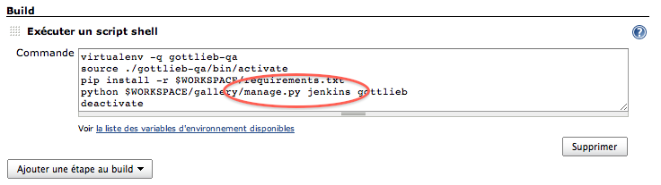
Rapports de test
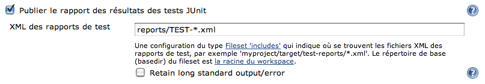
Configuration de Pylint
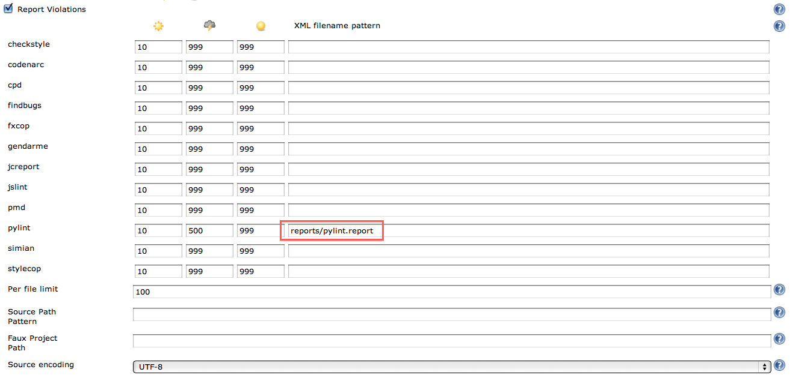
Configuration du Code Coverage
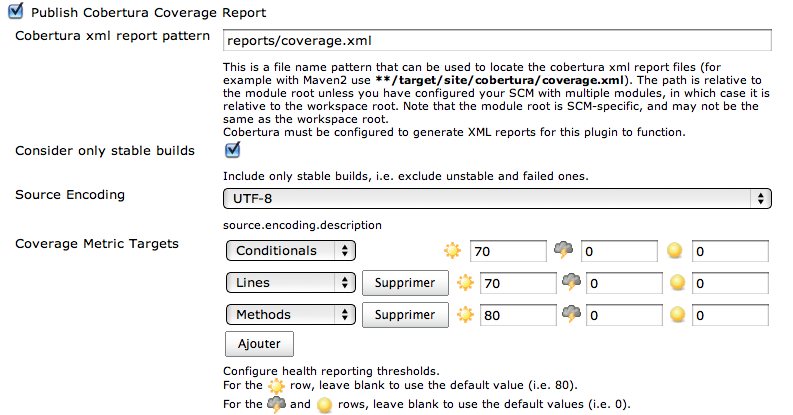
Légitime interrogation
Oui, bon, ok, mais ça donne quoi ?
Synthèse
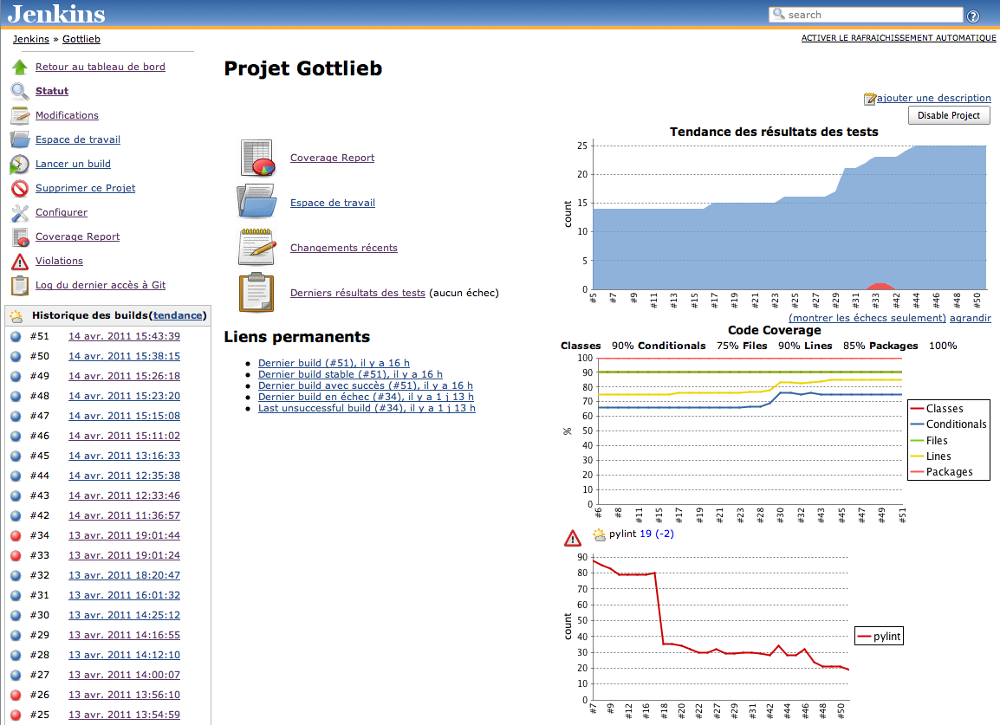
Tintin au pays de l'intégration continue
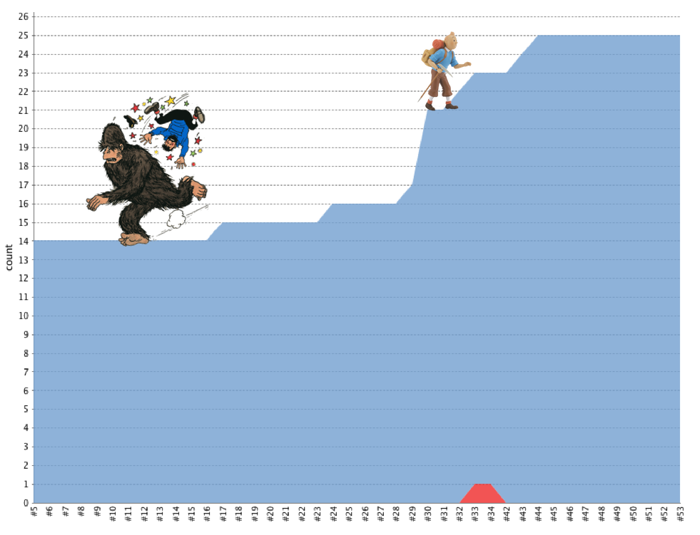
Rapports de test
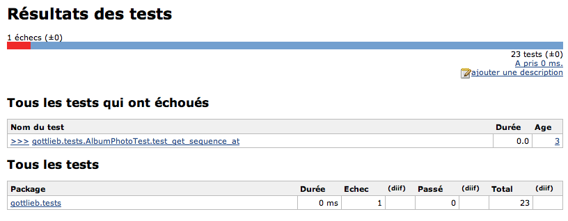
Détails d'un échec
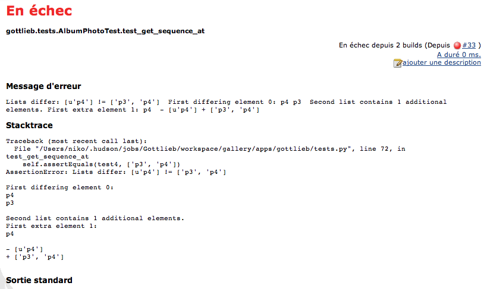
Couverture de code
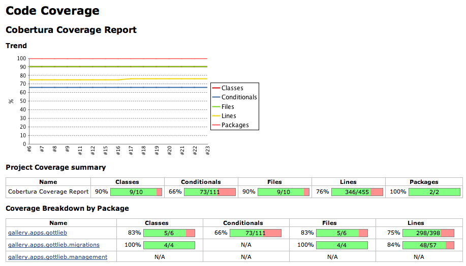
Couverture de code
Note: les zones en rouge montrent le code non couvert par les tests.
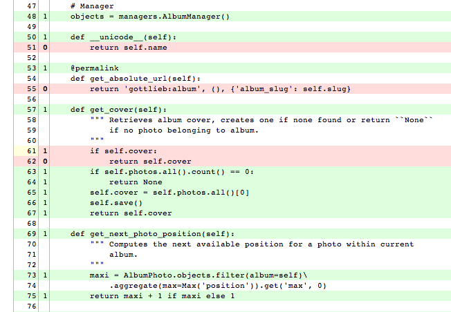
Violations
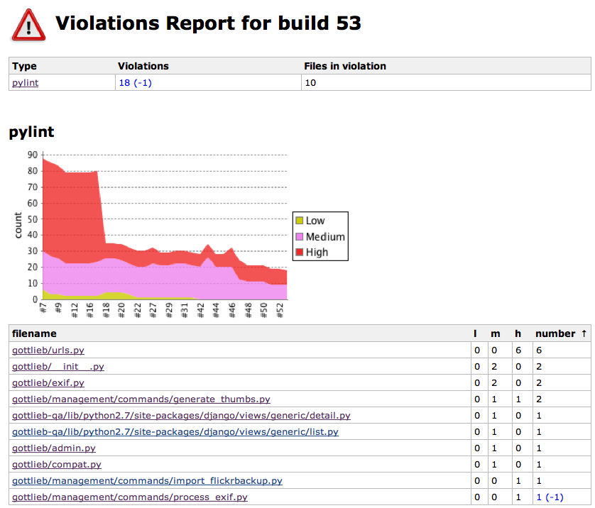
OH
On peut bien évidemment affiner la granularité des rapports de violation ;)
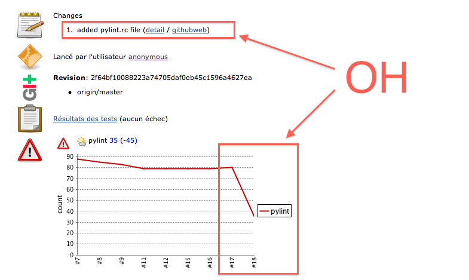
GithubWeb
GithubWeb est un plugin Jenkins générant des liens vers le code directement sur Github.
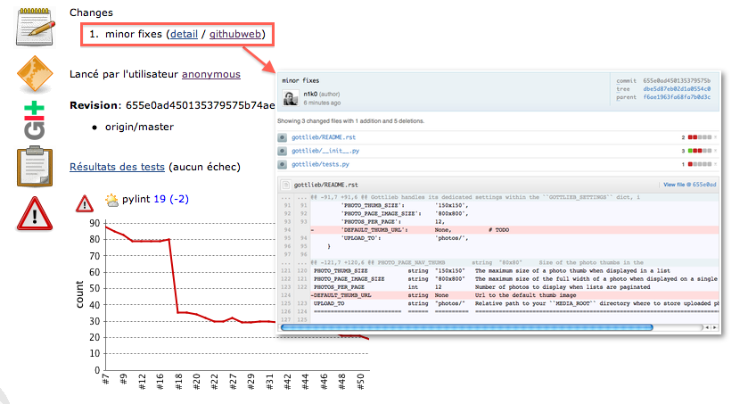
Violations
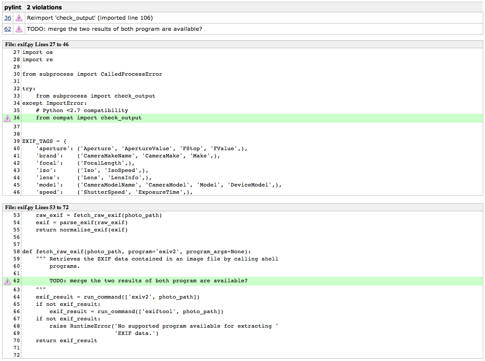
Principaux apports de la démarche
- Meilleur visibilité sur la qualité
- Responsabilisation des développeurs
- Bonne confiance sur les mises en production
- Utilisation possible sur tout type de projet et de configuration d'équipe
- Facile à installer et à intégrer à votre projet Django actuel !
Limites
- Nécessite l'écriture de tests (!)
- Java (#troll)
- Moche (#troll++)
- Potentielle incitation à la paresse intellectuelle
- Ne doit pas abstraire la vision KISS